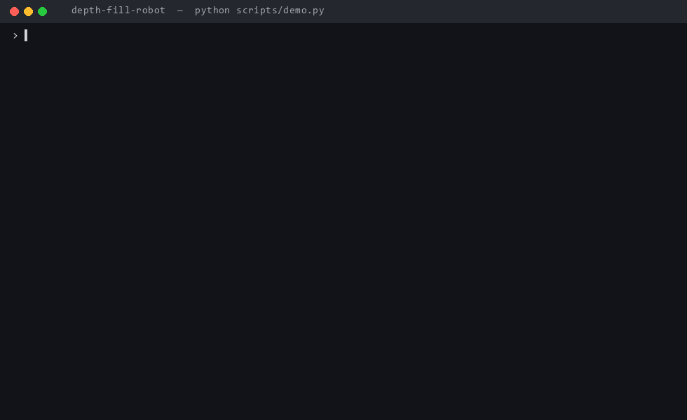
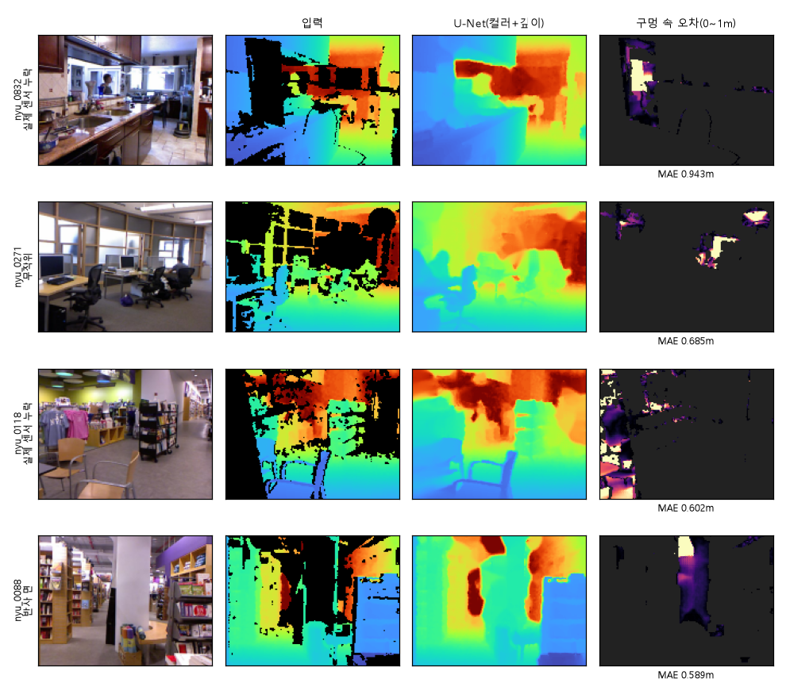

depth-fill-robot 로봇 카메라 깊이 영상에서 측정값이 빠진 곳을 채우고, 어떤 방법이 어디서 틀리는지 공정하게 재는 도구
구멍 난 깊이를 채워 보세요
시험 장면에 구멍을 내고 방법별로 채운 실제 결과입니다. 가운데 손잡이를 끌면 전/후가 바뀌고, 오른쪽 3D 점은 끌어서 돌릴 수 있습니다. 오차는 센서가 실제로 잰 픽셀에서만 잽니다.
주황 점이 채운 부분입니다. 가만히 두면 천천히 돌고, 끌면 멈춥니다.
한 가지를 바꿔서 기준선을 넘었습니다
처음에는 구멍 속 깊이를 통째로 맞히게 했고 네 유형 모두 Telea보다 나빴습니다. Telea로 먼저 채운 값을 입력으로 주고 보정값만 배우게 바꾸자 네 유형 모두 넘었습니다. 장면 짝 비교 95% 구간이 모두 0 아래입니다.
명령 한 줄로 처음부터 끝까지 다시 잽니다
데이터 불러오기 → 구멍 내기 → 방법 비교 → API 호출 → 품질 기준 시험 → 단위 시험. 품질 기준 시험은 일부러 나쁜 모델을 넣으면 종료 코드 1로 멈춥니다.

평가부터 세우고 모델은 나중에
실제 센서 데이터
NYU Depth v2 1,449장, 공식 학습 795 / 시험 654. 같은 방이 양쪽에 섞이지 않습니다.
구멍 네 가지
무작위, 물체 가장자리, 반사 면, 다른 장면의 실제 센서 누락 모양. 시드 고정.
공정한 평가 도구
모든 방법에 같은 장면, 같은 구멍. 알고리즘이 이미 채운 정답은 빼고 실측 픽셀만 잽니다.
기준선 네 개
안 채움, 평균, 확산, OpenCV Telea. 기준선이 약하면 결론도 틀립니다.
작은 U-Net 두 개
193만 파라미터. 깊이만 / 컬러+깊이. RTX 3060 Ti에서 5분.
API와 품질 기준
Flask POST /v1/fill(16비트 PNG, mm). 기준선보다 나쁘면 실패하는 시험.
틀린 곳과 고친 곳
버그: 기준선이 너무 약하게 나왔다
OpenCV Telea가 평균 채우기보다 나빴습니다(0.9m). 이 버전은 실수형 깊이를 넣으면 결과가 깨졌습니다. 밀리미터 정수로 바꿔 0.905 → 0.072m. 못 잡았으면 "모델이 크게 이겼다"는 틀린 결론이었습니다.
컬러를 더해도 나아지지 않았다
컬러+깊이 모델이 깊이만 쓴 모델보다 나은 장면은 38~49%. 원인 추정과 다음 시도는 판단 기록에 있습니다.
실제 센서 누락에서는 차이가 작다
−4%, 이긴 장면 60%. 앞 60장만 재면 오히려 집니다. 그래서 품질 기준 시험은 시험 분할 전체로 판정합니다.
창문·유리·먼 공간을 덮으면 크게 틀린다
구멍 둘레의 가까운 깊이로 이어 붙여 0.6~0.9m 오차. 로봇에 쓰려면 이런 곳을 믿지 않도록 불확실도를 함께 내야 합니다.
